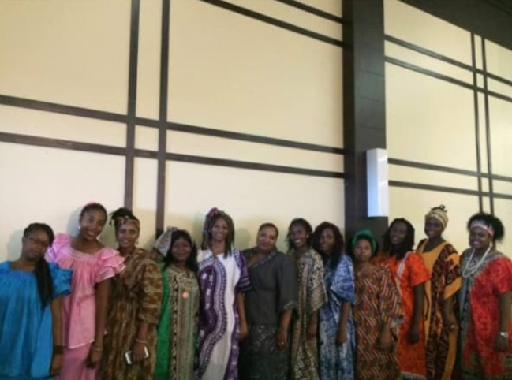
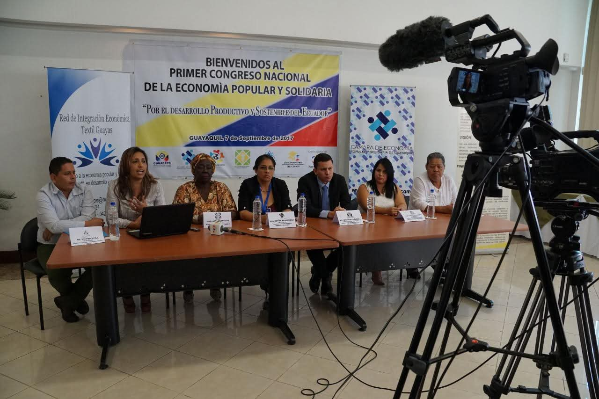
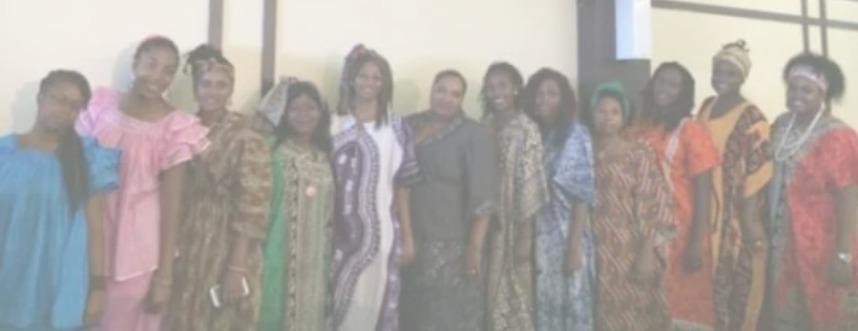

Impulsando el desarrollo de las comunidades afrodescendientes
Promovemos el emprendimiento, la inclusión económica y el desarrollo sostenible para construir oportunidades y fortalecer nuestras comunidades.
Promovemos el emprendimiento, la inclusión económica y el desarrollo sostenible para construir oportunidades y fortalecer nuestras comunidades.
La Cámara Afro de Economía Popular y Solidaria es una organización comprometida con el fortalecimiento económico, social, cultural y productivo de la población afrodescendiente, fundada el 14 de agosto de 2017 en Guayaquil, Ecuador.
Trabajamos para generar oportunidades de crecimiento sostenible a través del emprendimiento, la asociatividad, la capacitación y la articulación con diferentes actores estratégicos.

La CAEPS combate las brechas de vulnerabilidad histórica mediante inclusión comercial, capacitación regulatoria y articulación para la contratación pública, potenciando el comercio justo de la comunidad afroecuatoriana.
Articulamos la participación de productores afrodescendientes con empresas públicas del Estado ecuatoriano.
Asesoramos a asociaciones textiles, alimentarias y de servicios para venderle directamente al Estado.
Talleres y webinars para que las organizaciones cumplan con la Superintendencia de EPS y mantengan su personería jurídica.
Formación sobre los beneficios legales del modelo asociativo y de cooperación.
Trabajamos con el Instituto Nacional de EPS para viabilizar proyectos gubernamentales clave para la comunidad afro.
Facilitamos el acceso a programas de financiamiento y dotación de equipamiento para asociaciones afroecuatorianas.
Nacimos en Guayaquil en 2017 para visibilizar los emprendimientos afrodescendientes urbanos, rompiendo con el mito de que estas comunidades pertenecían solo al ámbito rural. Iniciamos con 14 unidades económicas dedicadas al comercio minorista, artesanía y preparación de alimentos.
Somos la única organización de cámara empresarial enfocada exclusivamente en la economía popular y solidaria afrodescendiente del Ecuador. Articulamos emprendimiento, cultura e identidad como ejes inseparables del desarrollo económico comunitario.
Crear vínculos entre profesionales, empresarios y emprendedores con el fin de lograr el surgimiento y fortalecimiento de nuevas empresas. Al mismo tiempo impulsar la investigación en todos los campos de aporte científico y técnico, realizando labores de desarrollo industrial y cultural en las comunidades afrodescendientes.
Ser la organización empresarial líder y el referente principal en el desarrollo económico de la comunidad afrodescendiente, promoviendo la inclusión financiera, el comercio justo y el fortalecimiento de emprendimientos sostenibles que generen un impacto positivo en la sociedad y la economía nacional.
Brindamos asesoramiento especializado a emprendedores afroecuatorianos en la planificación, organización y fortalecimiento de sus iniciativas productivas. Nuestro objetivo es contribuir al crecimiento sostenible de los negocios y mejorar su capacidad de gestión dentro del mercado.
Desarrollamos programas de formación orientados al fortalecimiento de conocimientos y habilidades en áreas como liderazgo, administración, educación financiera, comercialización e innovación. Estas capacitaciones buscan impulsar el desarrollo personal y empresarial de los participantes.
Promovemos espacios de conexión entre emprendedores, organizaciones, instituciones y potenciales clientes. A través de estas acciones buscamos ampliar oportunidades de comercialización y fortalecer la presencia de los emprendimientos en diferentes mercados.
Impulsamos la creación de alianzas con entidades públicas, privadas y académicas que contribuyan al fortalecimiento de los emprendimientos y organizaciones afroecuatorianas. Estas colaboraciones permiten acceder a recursos, conocimientos y nuevas oportunidades de desarrollo.
La Cámara Afro de Economía Popular y Solidaria (CAEPS) nació de las necesidades de estructura y visibilizar los emprendimientos de la población afrodescendiente urbana en el Ecuador, rompiendo con el mito histórico de que las comunidades afroecuatorianas pertenecían exclusivamente al ámbito rural. La Cámara se constituyó formalmente en 2017 en Guayaquil, Ecuador, agrupando inicialmente a 14 unidades económicas y colectivas de autoempleo dedicados al comercio minorista, la artesanía y la preparación de alimentos.
Es una organización orientada al fortalecimiento económico, social y productivo de la población afrodescendiente, mediante la promoción del emprendimiento, la asociatividad y el desarrollo sostenible. La institución inició sus actividades el 14 de agosto de 2017, constituyéndose como un espacio de articulación entre emprendedores, productores, comerciantes y organizaciones comprometidas con el progreso de las comunidades afrodescendientes.
Desde su creación, la Cámara ha trabajado en la generación de oportunidades para sus asociados, impulsando iniciativas de capacitación, asistencia técnica, acceso a mercados, fortalecimiento empresarial y promoción de la economía popular y solidaria. Asimismo, ha fomentado alianzas estratégicas con instituciones públicas, privadas y organismos de cooperación para contribuir al desarrollo económico inclusivo y la reducción de brechas sociales.
La organización busca visibilizar el aporte de la población afrodescendiente al desarrollo del país, promoviendo la participación activa de sus miembros en actividades productivas, comerciales, culturales y de innovación. A través de sus programas y proyectos, la Cámara fortalece capacidades locales, impulsa la creación de emprendimientos sostenibles y promueve principios de equidad, solidaridad y desarrollo comunitario.
En la actualidad, la Cámara Afro de Economía Popular y Solidaria continúa consolidándose como una entidad representativa del sector, comprometida con el crecimiento económico, la inclusión social y el fortalecimiento de las capacidades productivas de las comunidades afrodescendientes.




